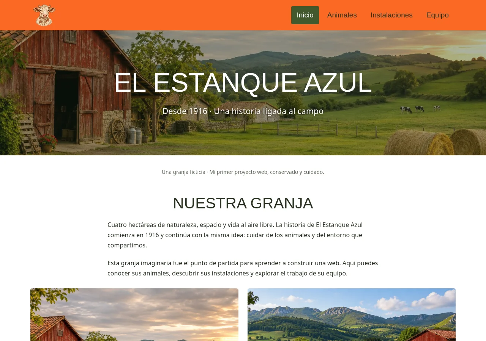

EL ESTANQUE AZUL / 2021 → 2026
Mi primera web.
Una nueva mirada.
Una granja ficticia fue mi punto de partida para aprender HTML y CSS. En esta nueva versión revisito el proyecto para mejorar cómo se presenta la granja y cómo se imagina una visita.
De dónde partía
En diciembre de 2021 empecé El Estanque Azul como proyecto académico de la primera evaluación de ASIR. La web presentaba una granja imaginaria a través de sus animales, instalaciones y equipo.
Me permitió practicar la estructura de una página, los estilos y la organización de distintas secciones. Sigue disponible como parte de mis primeras exploraciones web.
La versión original ha recibido mantenimiento e imágenes nuevas con el tiempo; el año indica el inicio del proyecto, no una copia intacta de la entrega de 2021.
Visitar el proyecto original ↗
La nueva dirección
La reinterpretación parte de una pregunta: ¿qué necesitaría alguien para descubrir esta granja e imaginar un día allí?
La propuesta mantiene el entorno rural y los animales, con una nueva identidad visual en tonos de campo y estanque, tipografía editorial y una navegación que conecta presentación, experiencias y planificación.
- Descubrir la granja. Un recorrido visual con contenido más ordenado y una presentación propia.
- Elegir una experiencia. Tres propuestas ilustrativas: en familia, con el colegio o un paseo tranquilo.
- Preparar un plan. Un itinerario de ejemplo según la actividad, la fecha y el tamaño del grupo.
- Consultar lo práctico. Preguntas frecuentes sobre qué llevar, cómo acercarse a los animales y el carácter ficticio del lugar.
Más que un cambio visual
La nueva web incorpora imágenes optimizadas en WebP, diseño adaptable, navegación por teclado, formularios etiquetados y foco visible. El contenido principal se puede consultar sin JavaScript; la interacción del planificador se ejecuta en el navegador.
La demo no pide nombre ni correo, no guarda información y no hace reservas reales. La granja y sus experiencias son ficticias, y las escenas se han generado con IA.
El objetivo es mostrar cómo ha cambiado mi forma de abordar una web: además de construir páginas, pensar qué necesita encontrar la persona que las visita y facilitarle el siguiente paso.
Dos etapas del mismo proyecto
El original sigue en su dirección y repositorio. La nueva versión tiene su propio repositorio privado y se publica de forma independiente en granja.nmclabs.dev, con alojamiento en Netlify.
Consultar el código original ↗